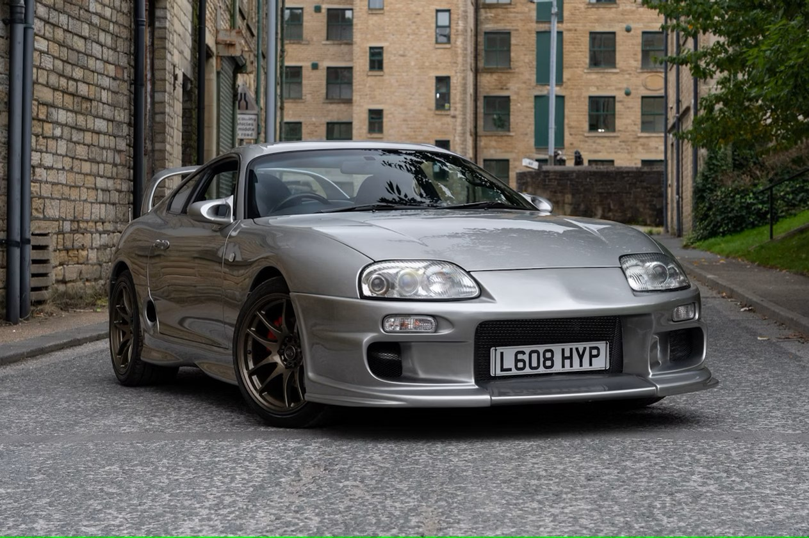

Supra
O Toyota Supra MK4, conhecido como Toyota Supra A80 nos Estados Unidos, é um dos carros esportivos mais lendários e icônicos da Toyota. Produzido entre 1993 e 2002, o MK4 Supra é celebrado por seu desempenho impressionante e por sua influência na cultura automobilística. Aqui estão alguns detalhes importantes sobre o Supra MK4:

Desempenho e Motor
Motor: O Supra MK4 é mais conhecido pelo seu motor 2JZ-GTE, um 6 cilindros em linha, 3.0 litros, com dois turbocompressores (biturbo). Este motor é famoso por sua robustez e capacidade de gerar grandes quantidades de potência. Potência: O motor 2JZ-GTE produz cerca de 276 hp (cavalos de potência) de fábrica, mas devido à sua engenharia resistente e potencial de modificação, muitos Supra MK4 são capazes de atingir muito mais potência. Transmissão: O Supra MK4 vem com uma transmissão manual de 6 marchas, conhecida por sua precisão e confiabilidade, que complementa o motor de alto desempenho.
Tecnologia e Engenharia
Suspensão: O MK4 Supra utiliza uma suspensão independente nas quatro rodas, contribuindo para uma condução equilibrada e um controle preciso em diferentes condições de estrada. Freios e Tração: Equipado com freios a disco ventilados nas quatro rodas e uma tração traseira, o Supra oferece um excelente desempenho de frenagem e controle em alta velocidade. Aerodinâmica: O design do Supra é aerodinamicamente eficiente, com um perfil baixo e um spoiler traseiro grande que ajuda a manter a estabilidade em alta velocidade.
Design e Estilo
Visual: O Supra MK4 tem um design musculoso e esportivo, com linhas agressivas e um perfil aerodinâmico. O carro é frequentemente reconhecido por seus faróis de pop-up, que eram uma característica distinta da época. Interior: O interior do Supra MK4 é focado no motorista, com um painel de instrumentos voltado para a performance e assentos esportivos que proporcionam um bom suporte lateral.
Cultura e Legado
Popularidade: O Supra MK4 ganhou fama significativa na cultura popular, especialmente através de sua aparição em filmes como "Fast & Furious" e videogames como "Gran Turismo". Seu motor 2JZ-GTE é amplamente considerado um dos melhores motores para tuning e modificações. Relação com o Motorsport: O Supra MK4 também teve uma presença notável em competições de esportes motorizados, como corridas de drift e competições de drag racing, onde sua potência e capacidade de modificação foram altamente valorizadas.
Colecionismo e Mercado
Valorização: Devido ao seu status icônico e às suas características de desempenho, o Supra MK4 é altamente valorizado por colecionadores e entusiastas. Modelos bem conservados, especialmente aqueles com a configuração original do motor 2JZ-GTE, podem alcançar preços elevados no mercado de usados. Modificações: O Supra MK4 é famoso por sua capacidade de suportar modificações significativas. Muitos proprietários optam por melhorar o motor e outros componentes para alcançar níveis de desempenho muito além dos originais.
Modelos e Versões
Modelos: O Supra MK4 foi oferecido em diferentes variantes, incluindo versões com diferentes pacotes de equipamentos e opções de suspensão. A versão Turbo é a mais famosa e procurada devido ao seu desempenho superior.
O Toyota Supra MK4 é amplamente respeitado como um dos maiores esportivos da sua época e continua a ser um símbolo de desempenho e inovação no mundo dos carros esportivos. Seu legado perdura, e ele continua a ser um carro altamente desejado por entusiastas e colecionadores ao redor do mundo.